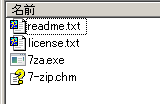

インストールしないでzipや7z圧縮ファイルを作る方法
圧縮ファイルの作成で、Windowsの管理者権限がなかったり、レジストリに何も書かれたくないなどの理由によって、ソフトウェアのインストールをしたくない場合は、いくつかの方法があります。
コマンドライン版を使う方法
もっとも簡単なのは7-Zipのコマンドライン版を使う方法です。まず、「ダウンロード」のページから「7-Zip コマンドラインバージョン」を選択してファイルをダウンロードします。ファイル名は、
7za<バージョン番号>.zip
のようになっています。これをダウンロードしたら、適当なフォルダに解凍します。zip形式になっていますが、Windows標準の機能だけでも解凍できます。ZIPファイルに含まれるのは以下のファイルです。
この中の7za.exeファイルだけで、圧縮や解凍が行えます。
コマンドプロンプトで圧縮
基本的な操作は、コマンドプロンプトを起動してコマンドで操作する方法です。 7za.exeファイルがC:\toolsにあるとして、ファイルdata.xlsxがC:\downloadsにあり、これをdata.zipファイルにしたいとします。まず、「アクセサリ」－「コマンドプロンプト」からコマンドプロンプトを起動します。

コマンドプロンプトが起動したら、C:\downloadsに移動し、7za.exeを起動します。
cd c:\downloads c:\tools\7za.exe a data.zip data.xlsx 7-Zip (A) 9.20 Copyright (c) 1999-2010 Igor Pavlov 2010-11-18 Scanning Creating archive data.zip Compressing data.xlsx Everything is Ok
コマンドの意味は、次のようになります。
7za.exe <命令> <圧縮ファイル名> <圧縮したいファイル名>
圧縮するには「a」（add、追加）を入力します。指定した<圧縮ファイル名>がすでに存在していれば、その圧縮ファイルにファイルを追加して圧縮します。
圧縮形式の変更
上記のように、<圧縮ファイル名>を.zipとすればZIPファイルが作成されます。data.7zのように.7zというファイル名にすれば、自動的に7zファイルが作成されます。
なお、「-t」オプションを使って「-tzip」のように指定すると、明示的に圧縮形式を指定できます。
c:\tools\7za.exe a -tzip data.zip data.xlsx
ドラッグ＆ドロップで圧縮できるようにする
～.batというファイル名でバッチファイルを作成すれば、圧縮したいファイルおよびファイル群をバッチファイルにドラッグ＆ドロップして圧縮ファイルを作ることができます。
まず、テキストエディタや「アクセサリ」－「メモ帳」を開き、以下のような内容を記述します。
C:\tools\7za.exe a %1.zip %*
（7za.exeファイルがC:\toolsにある場合）
%1.zipの部分は圧縮ファイル名で、最初にドラッグ＆ドロップされたファイルのファイル名＋.zipというファイル名になります。%*はドラッグ＆ドロップされたファイルもしくはファイル群のファイル名が入ります。 このテキストをデスクトップなど任意の場所に「圧縮.bat」というような名前で保存します。

以上で準備完了です。後はこのファイル（アイコン）に任意のファイルもしくは複数のファイルをドラッグ＆ドロップすれば、圧縮ファイルが作成されます。
圧縮ファイルが作成される場所はドラッグ＆ドロップしたファイルと同じフォルダになります。
OSDN Project